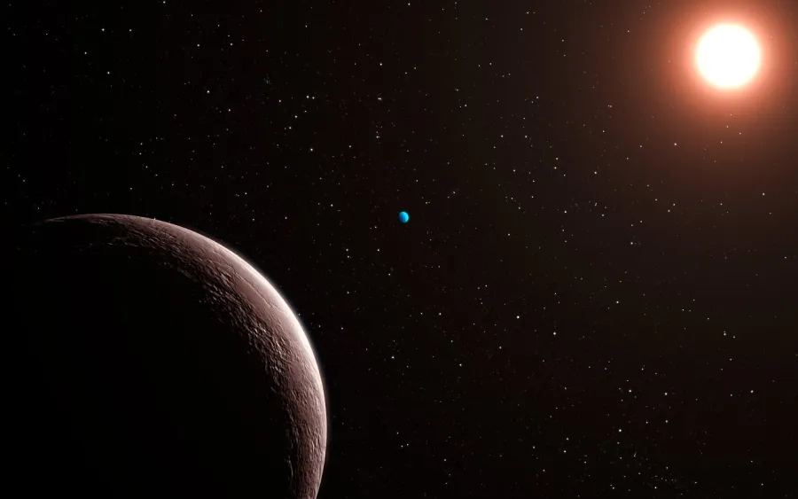

April 21, 2009
Gliese 581 e: lightest exoplanet – and two planets that probably do not exist
In 2009 Gliese 581 e was reported as the lightest exoplanet known up to that time: about 1.9 Earth masses, with an orbital period of 3.15 days. At the same time, a newly determined orbit (66.8 days) placed the planet Gliese 581 d in the habitable zone. In 2010 another team reported Gliese 581 g, a further planet in the middle of the habitable zone.
A study published in 2014 concluded that the signal of planet d is caused by the activity of the star and that planet g is a consequence of this misinterpretation. The exoplanet.eu catalogue lists only planets b, c and e for Gliese 581.
Sources: ESO: "Lightest exoplanet yet discovered." (eso0915), 2009-04-21; W. M. Keck Observatory: "Keck Observatory discovers the first Goldilocks Exoplanet.", 2010-09-29; arXiv: Robertson et al., "Stellar Activity Masquerading as Planets in the Habitable Zone of the M dwarf Gliese 581." (Science, 2014), 2014-07-03